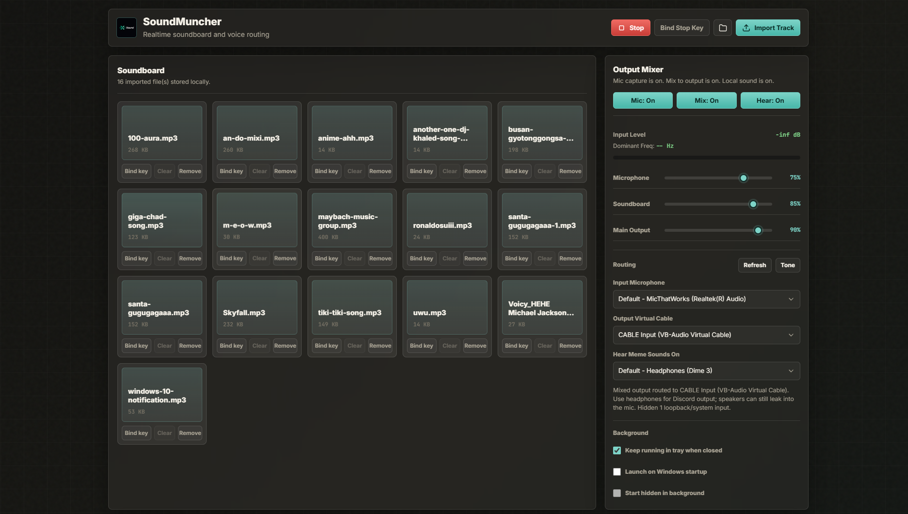

FreqX
A Windows soundboard that mixes a live microphone with local effects, then routes the combined output into Discord through VB-CABLE.
- Per-sound hotkeys and playback modes
- Microphone, monitor, and output mixing
- Custom
freqx://audio imports - Public release history through 1.6.0